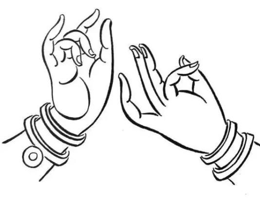
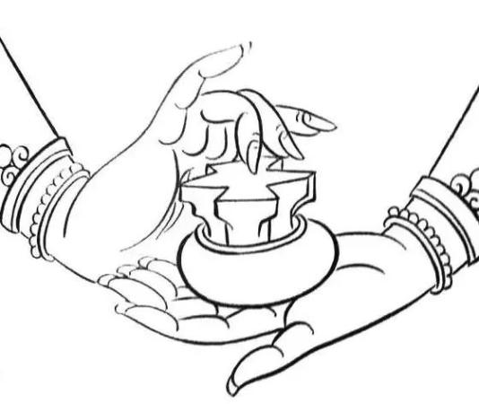
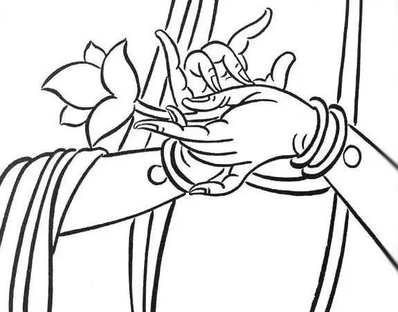
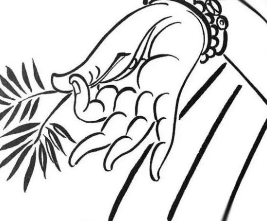
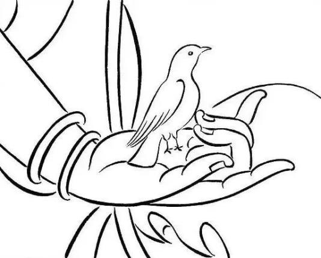
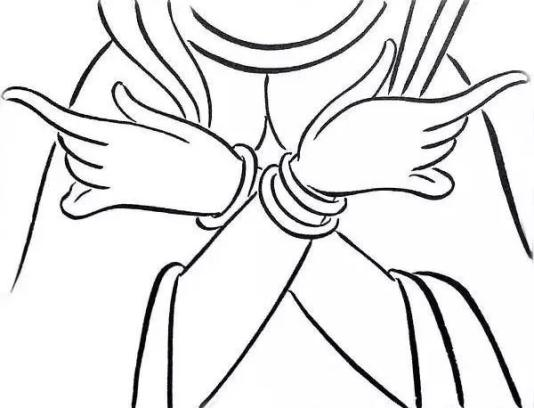

佛之手印——敦煌的极简美学(The handprint of the Buddha, the minimalist aesthetics of Dunhuang)
-

佛说法手
所属: 伯孜克里克石窟第31窟-高昌
敦煌写经是中国古文献中的瑰宝，自1900年敦煌写经卷在敦煌藏经洞被发现后，密藏多年的敦煌文献随即流散，许多完整的写经卷均被国外的探险家所劫掠。直到1910年，清朝学部才将劫余部分运抵北京。
-

化须弥山手
所属: 莫高窟第3窟-元代
敦煌市档案馆所保存的12件唐代古藏文《敦煌写经》中，《般若波罗蜜多经》共有7件，梵夹装，纸张展开后长71厘米，宽20厘米；有部分残缺。《十万般若波罗蜜多经》共有2件，梵夹装，纸张展开后长73厘米。
-

持莲手
所属: 莫高窟第6窟-宋代
药师琉璃光如来是佛教中的一尊佛陀，被认为拥有特殊的医疗和治愈力量，被信仰为医药菩萨。这部经典描述了药师佛的愿望和力量，以及信徒如何通过信仰和忏悔获得庇佑。 敦煌莫高窟保存了大量佛教文献。
-

持柳枝手
所属: 唐代绢画
敦煌莫高窟藏经洞发现的写经，上起魏晋，下至宋元，其中的大部分是唐代的写经卷子。历代抄写经书的人员，大多出自经生、书手和善书的僧人，他们有的受人雇佣，有的自愿抄写。 抄写经书意在文字，以无讹为是。
-

护鸽手
所属: 莫高窟第254窟 北魏
唐代书法崇尚"王体"，在敦煌石室中也曾藏有王羲之的《瞻近帖》、《龙保帖》，智永的《真草千字文残卷》等名作临本，虽数量不多，且有残缺，但为我们提供了一定佐证。
-

菩萨手
所属: 莫高窟第248窟 北魏
《真草千字文残卷》虽数量不多，且有残缺，但为我们提供了一定佐证。然而，写经书法正是在这样的环境中显现风格，因意在文字，又不似王书飘逸，反有一种严劲刻厉之美。